figures
rm(list = ls(all.names = TRUE))
library(ggplot2)
library(tidyr)data <- read.csv("~/git/economic-influenza/df/icer-all.csv")
df <- data[(data$scenario!="base"),]
df$age <- factor(df$age, levels = c("0-4 yrs", "5-19 yrs", "20-64 yrs", "65+ yrs", "All"))
df$risk <- factor(df$risk, levels = c("High", "Non-high", "All"))
df$scenario <- factor(df$scenario, levels = c("vaxbase", "vax70"))
df$v.eff <- factor(df$v.eff)
df$cases.averted <- as.numeric(df$cases.averted)
df$cases.averted.per100k <- as.numeric(df$cases.averted.per100k)
df$icer.case.averted <- as.numeric(df$icer.case.averted)
df$deaths.averted <- as.numeric(df$deaths.averted)
df$deaths.averted.per100k <- as.numeric(df$ deaths.averted.per100k)
df$icer.death.averted <- as.numeric(df$icer.death.averted)
df$dalys <- as.numeric(df$dalys)
df$dalys.per100k <- as.numeric(df$dalys.per100k)
df$dalys.averted <- as.numeric(df$dalys.averted)
df$dalys.averted.per100k <- as.numeric(df$dalys.averted.per100k)
df$icer.daly.averted <- as.numeric(df$icer.daly.averted)
df <- as.data.frame(df)# subset relevant efficacies
df2 <- df[(df$v.eff!=50 & df$v.eff!=60),]
df3 <- df2[1:90,]
# subset by age group
age_group_df <- df3[(df3$risk=="All"),]
# subset by risk group
risk_group_df <- df3[(df3$risk!="All"),]ICER sensitivity analysis
# icer per case averted
ggplot(age_group_df, aes(x = age, y = icer.case.averted, color = v.eff, group = v.eff)) + labs(color = "Vaccine \nefficacy") +
geom_point() + geom_line(linetype = "dotted") + ylab("$ saved per case averted") +
facet_grid(~ scenario) + ggtitle("ICER per case averted")
# icer per death averted
ggplot(age_group_df, aes(x = age, y = icer.death.averted, color = v.eff, group = v.eff)) + labs(color = "Vaccine \nefficacy") +
geom_point() + geom_line(linetype = "dotted") + ylab("$ saved per death averted") +
facet_grid(~ scenario)+ ggtitle("ICER per death averted")
# icer per daly averted
ggplot(age_group_df, aes(x = age, y = icer.daly.averted, color = v.eff, group = v.eff)) + labs(color = "Vaccine \nefficacy") +
geom_point() + geom_line(linetype = "dotted") + ylab("$ saved per DALY averted") +
facet_grid(~ scenario) + ggtitle("ICER per DALY averted")
# icer per case averted
ggplot(age_group_df, aes(x = age, y = icer.case.averted, color = v.eff, group = v.eff)) + labs(color = "Vaccine \nefficacy") +
geom_point() + geom_line(linetype = "dotted") + ylab("$ saved per case averted") +
facet_grid(v.eff ~ scenario) + ggtitle("ICER per case averted")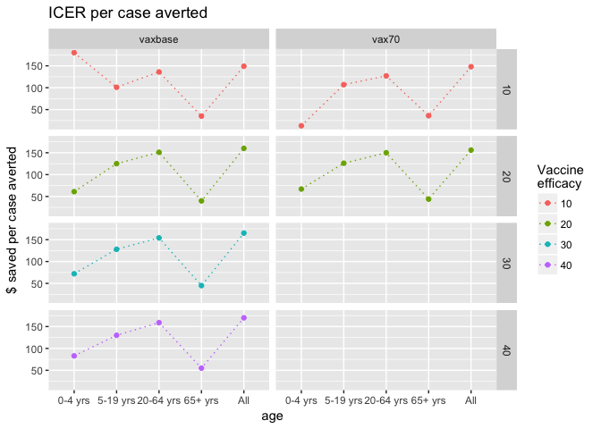
# icer per death averted
ggplot(age_group_df, aes(x = age, y = icer.death.averted, color = v.eff, group = v.eff)) + labs(color = "Vaccine \nefficacy") +
geom_point() + geom_line(linetype = "dotted") + ylab("$ saved per death averted") +
facet_grid(v.eff ~ scenario) + ggtitle("ICER per death averted")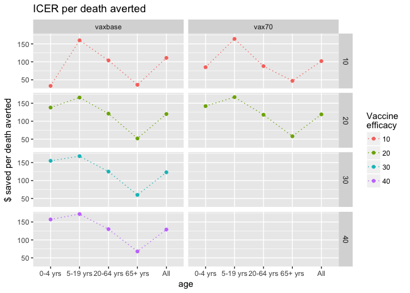
# icer per DALY averted
ggplot(age_group_df, aes(x = age, y = icer.daly.averted, color = v.eff, group = v.eff)) + labs(color = "Vaccine \nefficacy") +
geom_point() + geom_line(linetype = "dotted") + ylab("$ saved per DALY averted") +
facet_grid(v.eff ~ scenario) + ggtitle("ICER per DALY averted")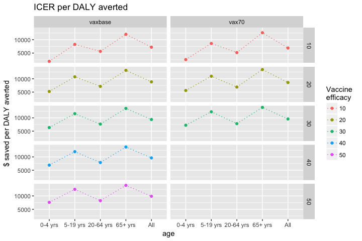
Vax base scenario
# subset vax base data
vaxbase_df <- df3[(df3$scenario=="vaxbase"),]
vaxbase_df_risk <- risk_group_df[(risk_group_df$scenario=="vaxbase"),]
vaxbase_df_age <- age_group_df[(age_group_df$scenario=="vaxbase"),]Cases
ggplot(vaxbase_df_age, aes(x = age, y = cases, color = v.eff, group = v.eff)) + geom_point() + geom_line(linetype = "dotted") +
ggtitle("Number of cases in each age group by vaccine efficacy")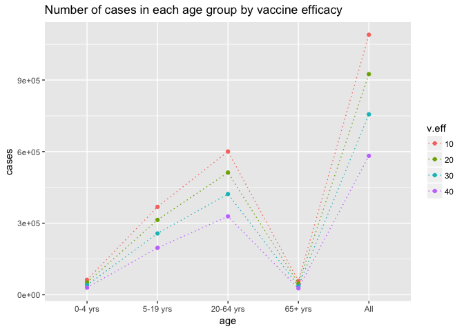
ggplot(vaxbase_df_age, aes(x = age, y = cases, color = v.eff, group = v.eff)) + labs(color = "Vaccine \nefficacy") +
geom_point() + geom_line(linetype = "dotted") + ylab("cases") +
facet_grid(~v.eff) + ggtitle("Number of cases in each age group by vaccine efficacy")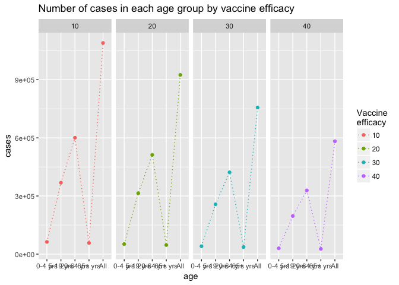
ggplot(vaxbase_df, aes(x = age, y = cases, color = risk, group = risk)) + labs(color = "Risk \ngroup") +
geom_point() + geom_line(linetype = "dotted") + ylab("cases") +
facet_grid(~v.eff) + ggtitle("Number of cases in each age and risk group by vaccine efficacy")
ggplot(vaxbase_df, aes(x = age, y = cases, color = risk, group = risk)) + labs(color = "Risk \ngroup") +
geom_point() + geom_line(linetype = "dotted") + ylab("cases") +
facet_grid(v.eff~risk) + ggtitle("Number of cases in each age and risk group by vaccine efficacy")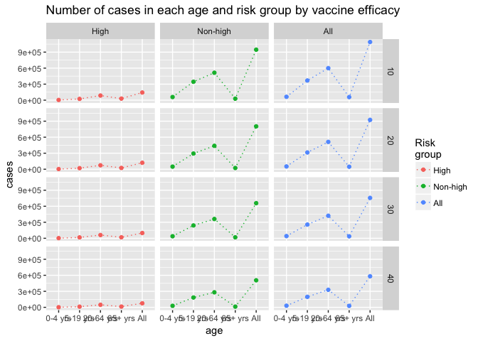
Deaths per 100k
ggplot(vaxbase_df_age, aes(x = age, y = deaths.per100k, color = v.eff, group = v.eff)) + geom_point() + geom_line(linetype = "dotted") +
ggtitle("Deaths per 100k in each age group by vaccine efficacy")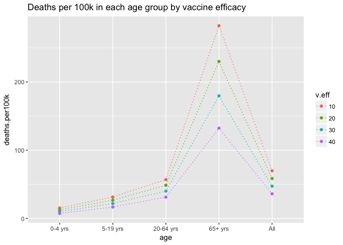
ggplot(vaxbase_df_age, aes(x = age, y = deaths.per100k, color = v.eff, group = v.eff)) + labs(color = "Vaccine \nefficacy") +
geom_point() + geom_line(linetype = "dotted") + ylab("deaths") +
facet_grid(~v.eff) + ggtitle("Deaths per 100k in each age group by vaccine efficacy")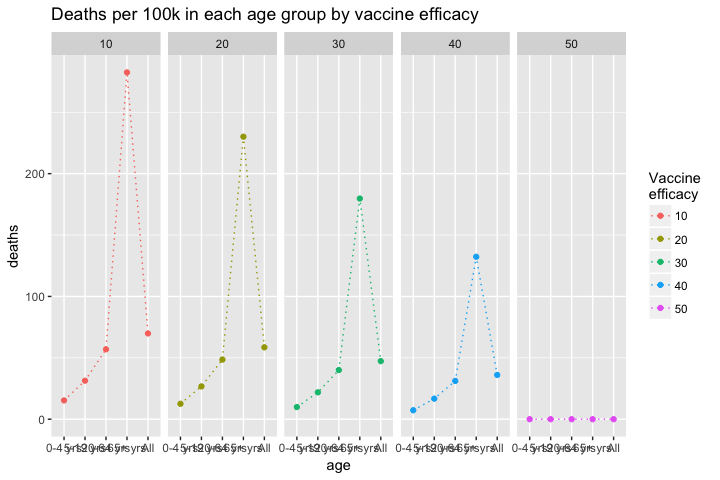
ggplot(vaxbase_df, aes(x = age, y = deaths.per100k, color = risk, group = risk)) + labs(color = "Risk \ngroup") +
geom_point() + geom_line(linetype = "dotted") + ylab("deaths") +
facet_grid(~v.eff) + ggtitle("Deaths per 100k in each age and risk group by vaccine efficacy")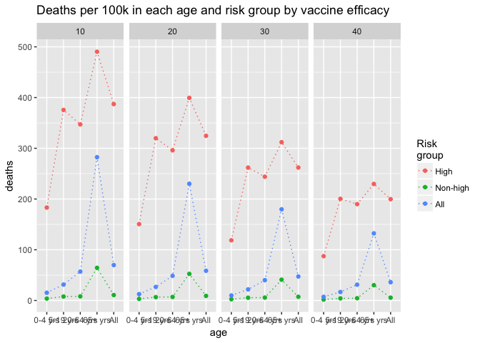
ggplot(vaxbase_df, aes(x = age, y = deaths.per100k, color = risk, group = risk)) + labs(color = "Risk \ngroup") +
geom_point() + geom_line(linetype = "dotted") + ylab("deaths") +
facet_grid(v.eff~risk) + ggtitle("Deaths per 100k in each age and risk group by vaccine efficacy")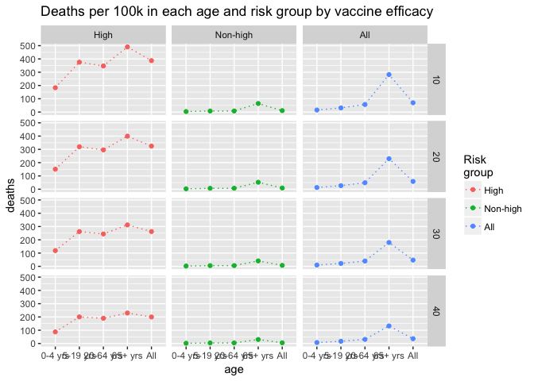
DALYs per 100k
ggplot(vaxbase_df_age, aes(x = age, y = dalys.per100k, color = v.eff, group = v.eff)) + geom_point() + geom_line(linetype = "dotted") +
ggtitle("DALYs per 100k in each age group by vaccine efficacy")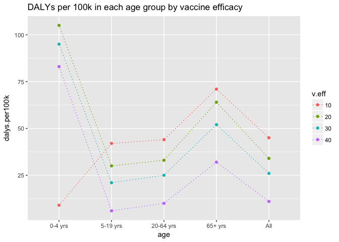
ggplot(vaxbase_df_age, aes(x = age, y = dalys.per100k, color = v.eff, group = v.eff)) + labs(color = "Vaccine \nefficacy") +
geom_point() + geom_line(linetype = "dotted") + ylab("DALYs") +
facet_grid(~v.eff) + ggtitle("DALYs per 100k in each age group by vaccine efficacy")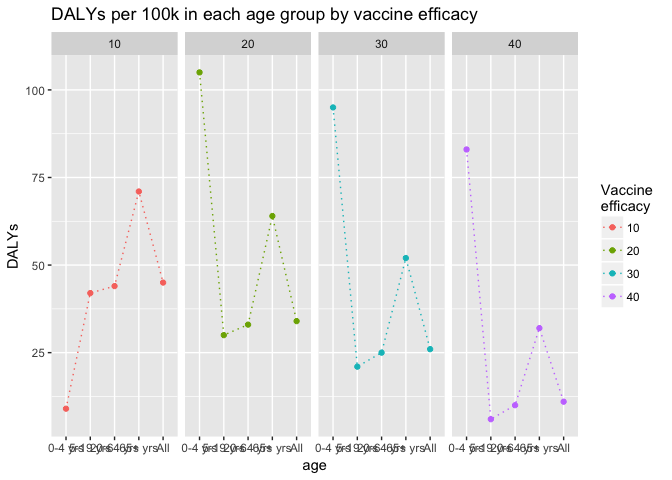
ggplot(vaxbase_df, aes(x = age, y = dalys.per100k, color = risk, group = risk)) + labs(color = "Risk \ngroup") +
geom_point() + geom_line(linetype = "dotted") + ylab("DALYs") +
facet_grid(~v.eff) + ggtitle("DALYs per 100k in each age and risk group by vaccine efficacy")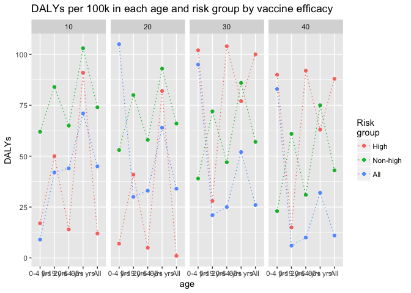
ggplot(vaxbase_df, aes(x = age, y = dalys.per100k, color = risk, group = risk)) + labs(color = "Risk \ngroup") +
geom_point() + geom_line(linetype = "dotted") + ylab("DALYs") +
facet_grid(v.eff~risk) + ggtitle("DALYs per 100k in each age and risk group by vaccine efficacy")
Vax 70% scenario
# subset vax70% data
vax70_df <- df3[(df3$scenario=="vax70"),]
vax70_df_risk <- risk_group_df[(risk_group_df$scenario=="vax70"),]
vax70_df_age <- age_group_df[(age_group_df$scenario=="vax70"),]Cases
ggplot(vax70_df_age, aes(x = age, y = cases, color = v.eff, group = v.eff)) + geom_point() + geom_line(linetype = "dotted") +
ggtitle("Number of cases in each age group by vaccine efficacy")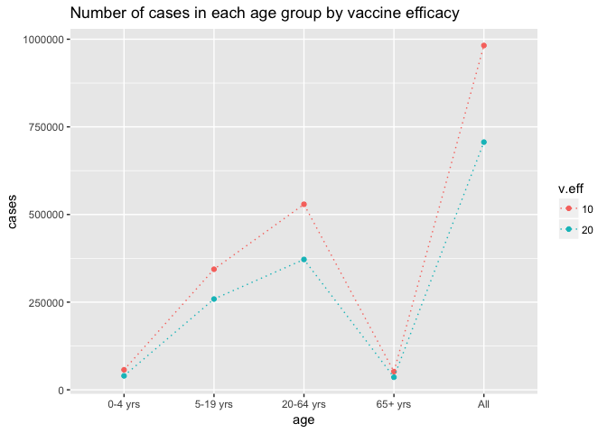
ggplot(vax70_df_age, aes(x = age, y = cases, color = v.eff, group = v.eff)) + labs(color = "Vaccine \nefficacy") +
geom_point() + geom_line(linetype = "dotted") + ylab("cases") +
facet_grid(~v.eff) + ggtitle("Number of cases in each age group by vaccine efficacy")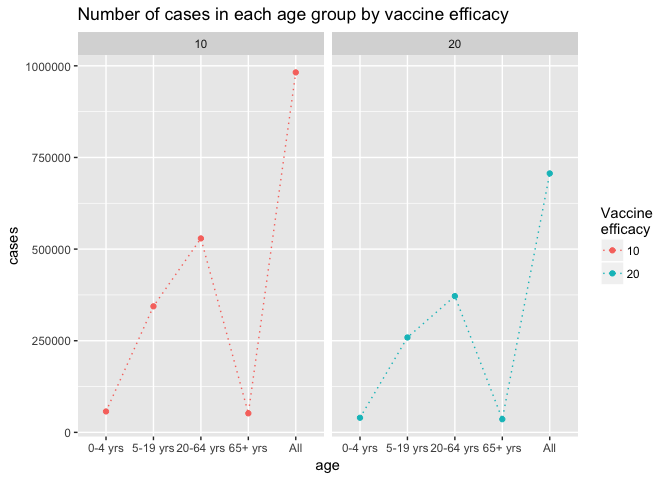
ggplot(vax70_df, aes(x = age, y = cases, color = risk, group = risk)) + labs(color = "Risk \ngroup") +
geom_point() + geom_line(linetype = "dotted") + ylab("cases") +
facet_grid(~v.eff) + ggtitle("Number of cases in each age and risk group by vaccine efficacy")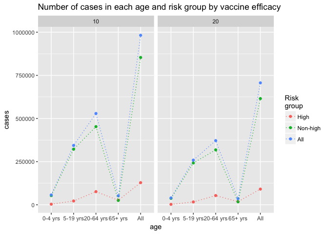
ggplot(vax70_df, aes(x = age, y = cases, color = risk, group = risk)) + labs(color = "Risk \ngroup") +
geom_point() + geom_line(linetype = "dotted") + ylab("cases") +
facet_grid(v.eff~risk) + ggtitle("Number of cases in each age and risk group by vaccine efficacy")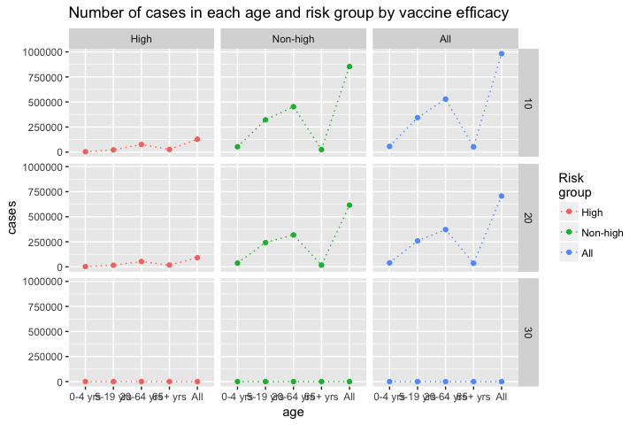
Deaths per 100k
ggplot(vax70_df_age, aes(x = age, y = deaths.per100k, color = v.eff, group = v.eff)) + geom_point() + geom_line(linetype = "dotted") +
ggtitle("Deaths per 100k in each age group by vaccine efficacy")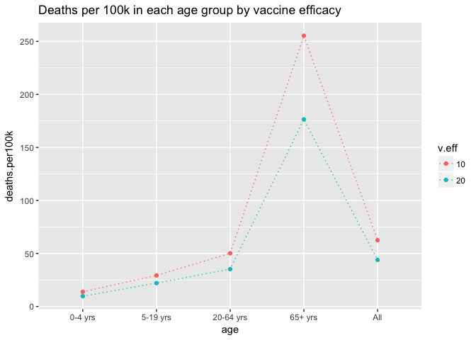
ggplot(vax70_df_age, aes(x = age, y = deaths.per100k, color = v.eff, group = v.eff)) + labs(color = "Vaccine \nefficacy") +
geom_point() + geom_line(linetype = "dotted") + ylab("deaths") +
facet_grid(~v.eff) + ggtitle("Deaths per 100k in each age group by vaccine efficacy")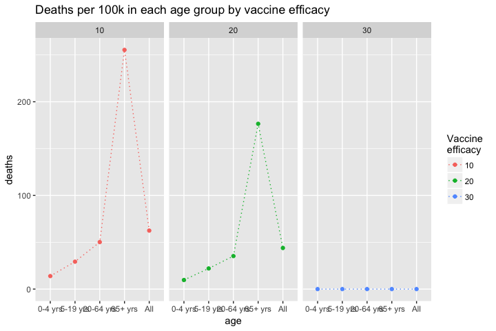
ggplot(vax70_df, aes(x = age, y = deaths.per100k, color = risk, group = risk)) + labs(color = "Risk \ngroup") +
geom_point() + geom_line(linetype = "dotted") + ylab("deaths") +
facet_grid(~v.eff) + ggtitle("Deaths per 100k in each age and risk group by vaccine efficacy")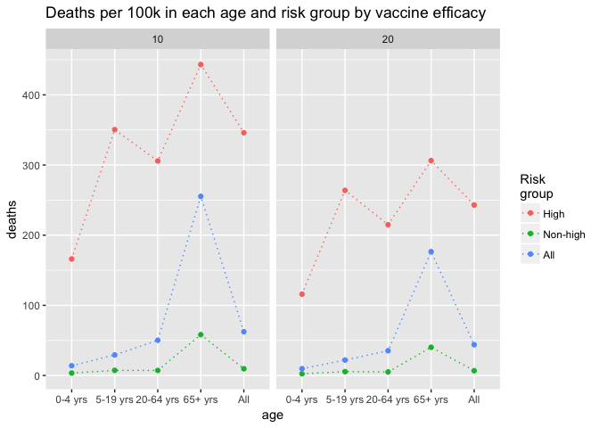
ggplot(vax70_df, aes(x = age, y = deaths.per100k, color = risk, group = risk)) + labs(color = "Risk \ngroup") +
geom_point() + geom_line(linetype = "dotted") + ylab("deaths") +
facet_grid(v.eff~risk) + ggtitle("Deaths per 100k in each age and risk group by vaccine efficacy")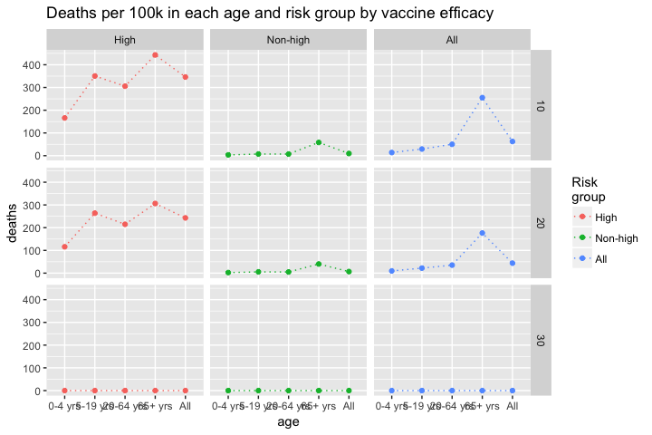
DALYs per 100k
ggplot(vax70_df_age, aes(x = age, y = dalys.per100k, color = v.eff, group = v.eff)) + geom_point() + geom_line(linetype = "dotted") +
ggtitle("DALYs per 100k in each age group by vaccine efficacy")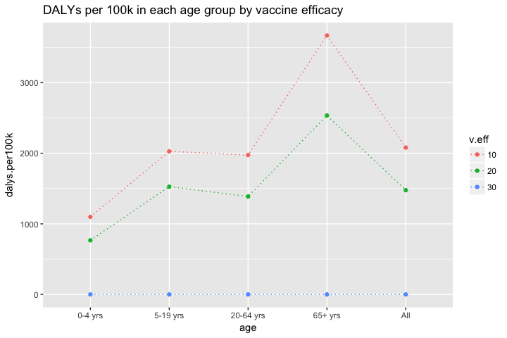
ggplot(vax70_df_age, aes(x = age, y = dalys.per100k, color = v.eff, group = v.eff)) + labs(color = "Vaccine \nefficacy") +
geom_point() + geom_line(linetype = "dotted") + ylab("DALYs") +
facet_grid(~v.eff) + ggtitle("DALYs per 100k in each age group by vaccine efficacy")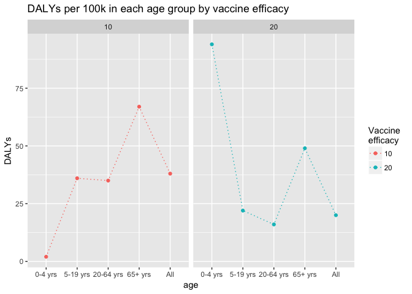
ggplot(vax70_df, aes(x = age, y = dalys.per100k, color = risk, group = risk)) + labs(color = "Risk \ngroup") +
geom_point() + geom_line(linetype = "dotted") + ylab("DALYs") +
facet_grid(~v.eff) + ggtitle("DALYs per 100k in each age and risk group by vaccine efficacy")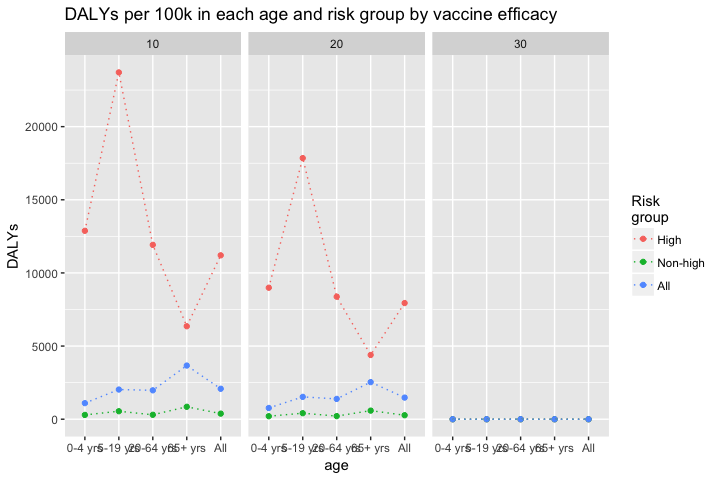
ggplot(vax70_df, aes(x = age, y = dalys.per100k, color = risk, group = risk)) + labs(color = "Risk \ngroup") +
geom_point() + geom_line(linetype = "dotted") + ylab("DALYs") +
facet_grid(v.eff~risk) + ggtitle("DALYs per 100k in each age and risk group by vaccine efficacy")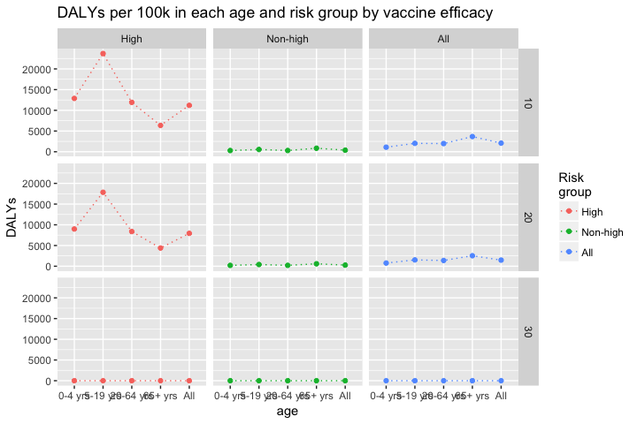